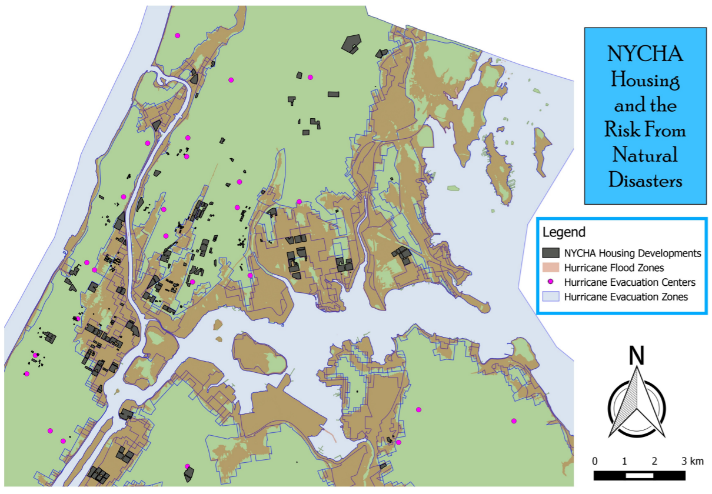
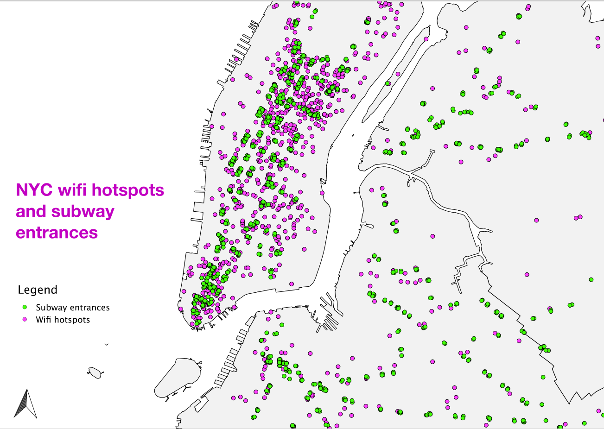
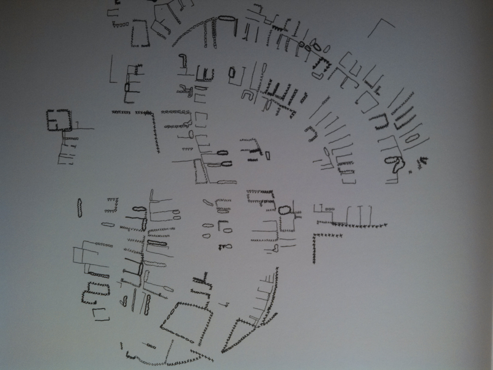

Welcome to Methods 3, Lecture 3
This is a web page that can be viewed as slides.
→ to move forward
← to go back
Methods 3
(review)
what is a datum?
what is a projection?
name the projection


Monique

Luis

Santiago

Aran
Attributes
Selection
Thematic maps
Qualitative vs Quantitative

Quantitative thematic maps
Quantitative thematic maps
aka choropleth maps
the Modifiable Areal Unit Problem
the Modifiable Areal Unit Problem
the boundaries you create can influence the way your data looks without changing the data

colorbrewer2.org
Finding data

data.cityofnewyork.us

nyc.gov/html/dcp/html/bytes/applbyte.shtml

data.gov

factfinder2.census.gov

databank.worldbank.org

earthquake.usgs.gov/earthquakes/search
Spatial data formats
mostly you'll see
shp
csv
geojson
kml
why isn't everything just a shapefile?
shapefiles are difficult to read
(without proper software) shapefiles are difficult to read
1. column names limited to ten characters

how do you pronounce "C_DIG2DESC"?
2. multiple files make up a shapefile
3. one geometry type per shapefile
where do file formats come from?
where does GeoJSON work?
GeoJSON is readable
{
"type": "FeatureCollection",
"features": [ ... ]
}
{
"type": "FeatureCollection",
"features": [
{ ... },
{ ... },
{ ... }
]
}
{
"type": "FeatureCollection",
"features": [
{
"type": "Feature",
"properties": {
"id": 1,
"Name": "My House",
"City": "White Hall",
"Comments": "It's OK"
},
"geometry": {
"type": "Point",
"coordinates": [-76.596, 39.684]
}
}
]
}
GeoJSON allows multiple geometry types in one file
GeoJSON is easy for web apps to understand
it's not without its flaws
the files can get big:
the files can get big:

joins & spatial joins